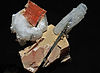

mineral

Definition: In geology and mineralogy, a mineral or mineral species is, broadly speaking, a solid substance with a fairly well-defined chemical composition and a specific crystal structure that occurs naturally in pure form.The geological definition of mineral normally excludes compounds that occur only in living organisms. However, some minerals are often biogenic (such as calcite) or are organic compounds in the sense of chemistry (such as mellite). Moreover, living organisms often synthesize inorganic minerals (such as hydroxylapatite) that also occur in rocks.
Source: Wikipedia
Wikipedia Page
Wikidata Page